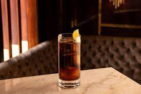

Cuba Libre recipe

Description
The Cuba Libre cocktail is one of the most popular cocktails around today.
The Cuba Libre recipe calls for rum, Coca-Cola, and lime juice. It is most
commonly served in a highball glass with ice, and it has a sweet, citrusy
and woody taste.
Ingredients
- 2 ounces rum.
- 1 lime wedge.
- Coca-Cola, to top.
- Garnish: lime wheel.
Steps
- Fill a highball glass with lots of ice.
-
Squeeze and drop 2 lime wedges into the glass, coating the ice well with
the juices
-
Pour in the Bacardi Oro, top up with chilled cola and stir gently.